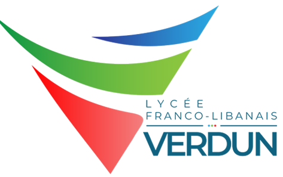
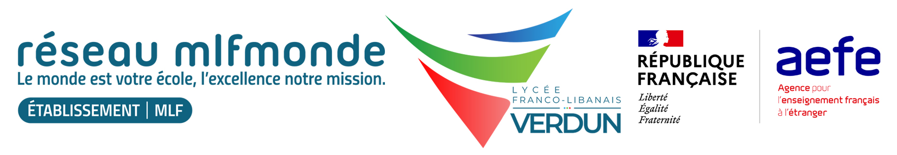

La
laïcité
« La laïcité n’est pas une opinion parmi d’autres mais la liberté d’en avoir une. »
Elle n’est pas une conviction mais le principe qui les autorise toutes. Observatoire de la laïcité
120 ans de la loi de 1905 · Faire défiler
Trois piliers
- Liberté de conscienceChacun croit, ne croit pas ou change de conviction, librement.
- Neutralité de l'ÉtatL'État ne favorise ni ne combat aucune croyance.
- Égalité des droitsMêmes droits pour tous, quelle que soit la croyance.
Trois contresens
- Contre les religionsNon : elle protège aussi le droit de croire.
- Une opinion de plusNon : c'est le cadre qui permet à toutes les opinions d'exister.
- Des citoyens neutresNon : c'est l'État qui doit être neutre, pas les personnes.
Cinq dates
- 1789Déclaration des droits de l'homme et du citoyen : nul ne doit être inquiété pour ses opinions, même religieuses.
- 1801Concordat : accord entre Napoléon Bonaparte et le pape, l'État et l'Église restent liés.
- 1881-82Lois Ferry : l'école publique devient gratuite, obligatoire et laïque.
- 1886Loi Goblet : le personnel des écoles publiques est laïcisé.
- 1905Séparation des Églises et de l'État : la loi du 9 décembre.
Depuis Beyrouth
Au Liban, la vie civile se partage avec les communautés religieuses. En France, la loi de 1905 sépare les Églises et l'État.
Deux histoires, deux façons de tenir ensemble la liberté de conscience et la vie commune. Dans un lycée franco-libanais, on apprend à lire les deux, sans les classer.
Journée de la laïcité
9 décembre 2026
120 ans de la loi du 9 décembre 1905. Un projet pour l'appel à projets AEFE 2026, « Valeurs de l'EFE et laïcité ».
Lycée franco-libanais de Verdun, Beyrouth
